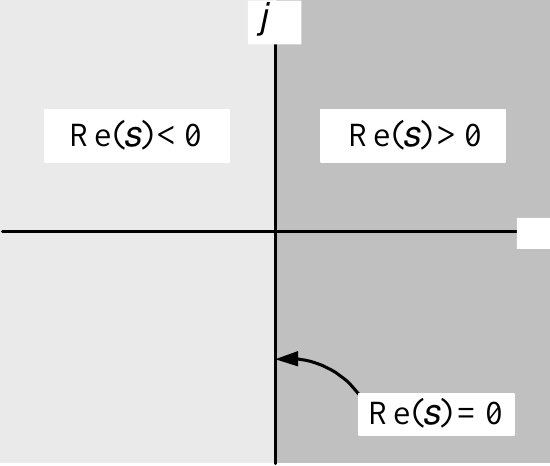

Differential Equations and Stability
System Modeling and Control · Chapter 3
Contents
Differential Equations
Phasor Method of Solution
Final Value Theorem
Stable Transfer Functions
Routh-Hurwitz Stability Test
Differential Equations
Consider \[\ddot{x}+\dot{x}+x=u.\]
Then \[\begin{aligned} X(s) & = \mathcal{L} \{x(t)\}\\ \mathcal{L} \{\dot{x}\} & =sX(s)-x(0)\\ \mathcal{L} \{\ddot{x}\} & =s \mathcal{L} \{\dot{x}\}-\dot{x}(0)=s(sX(s)-x(0))-\dot{x}(0)=s^{2}X(s)-sx(0)-\dot{x}(0). \end{aligned}\] Take Laplace transform of the differential equation to obtain \[\mathcal{L} \{\ddot{x}+\dot{x}+x\}=U(s)\] or \[\underset{ \mathcal{L} \{\ddot{x}\}}{\underbrace{s^{2}X(s)-sx(0)-\dot{x}(0)}}+\underset{ \mathcal{L} \{\dot{x}\}}{\underbrace{sX(s)-x(0)}}+X(s)=\underset{ \mathcal{L} \{u\}}{\underbrace{U(s)}}.\] Rearrange \[(s^{2}+s+1)X(s)-sx(0)-\dot{x}(0)-x(0)=U(s)\] or \[X(s)=\underset{G(s)}{\underbrace{\frac{1}{s^{2}+s+1}}}\underset{\text{Input} }{\underbrace{U(s)}}+\underset{\text{zero input response}}{\underbrace{\frac {sx(0)+\dot{x}(0)+x(0)}{s^{2}+s+1}}}.\]
Transfer Function
\[X(s)=\underset{G(s)}{\underbrace{\frac{1}{s^{2}+s+1}}}\underset{\text{Input} }{\underbrace{U(s)}}+\underset{\text{zero input response}}{\underbrace{\frac {sx(0)+\dot{x}(0)+x(0)}{s^{2}+s+1}}}.\]
Zero input response: \[\mathcal{L} ^{-1}\left\{ \frac{sx(0)+\dot{x}(0)+x(0)}{s^{2}+s+1}\right\} .\]
Zero initial condition response: \(\dot{x}(0)=x(0)=0\): \[X(s)=\underset{G(s)}{\underbrace{\frac{1}{s^{2}+s+1}}}\underset{\text{Input} }{\underbrace{U(s)}}.\]
Definition The transfer function is defined to be \[G(s)\triangleq\left. \frac{X(s)}{U(s)}\right\vert _{\dot{x}(0)=x(0)=0} =\frac{1}{s^{2}+s+1}.\]
Example With \(\dot{x}(0)=x(0)=0\) and \(u(t)=u_{s}(t)\): \[X(s)=G(s)U(s)=\frac{1}{s^{2}+s+1}\frac{1}{s}\] so \[x(t)=u_{s}(t)-e^{-(1/2)t}\cos(\sqrt{3}/2t)u_{s}(t)-\sqrt{1/3}e^{-(1/2)t} \sin(\sqrt{3}/2t)u_{s}(t).\]
Example Sinusoidal Steady-State Response
Consider \[\frac{d^{2}x}{dt^{2}}+\frac{dx}{dt}+x=u(t)\] with \[u(t)=U_{0}\cos(\omega t)u_{s}(t)\] and \[\dot{x}(0)=x(0)=0.\] We have \[\mathcal{L} \{U_{0}\cos(\omega t)u_{s}(t)\}=\frac{U_{0}s}{s^{2}+\omega^{2}}\] so that \[\mathcal{L} \left\{ \frac{d^{2}x}{dt^{2}}+\frac{dx}{dt}+x\right\} =\frac{U_{0}s} {s^{2}+\omega^{2}}.\] Then \[(s^{2}+s+1)X(s)=\frac{U_{0}s}{s^{2}+\omega^{2}}\] or \[X(s)=\underset{G(s)}{\underbrace{\frac{1}{s^{2}+s+1}}} \underset{U(s)}{\underbrace{\frac{U_{0}s}{s^{2}+\omega^{2}}}}.\]
Example Sinusoidal Steady-State Response (continued)
Partial fraction expansion of \(X(s)\): \[\begin{aligned} X(s) & =\frac{U_{0}s}{[s-(-1/2+j\sqrt{3}/2)][s-(-1/2-j\sqrt{3}/2)](s-j\omega )(s+j\omega)}\\ & =\underset{\text{From the poles of }G(s)}{\underbrace{\frac{\beta }{s-(-1/2+j\sqrt{3}/2)}+\frac{\beta^{\ast}}{s-(-1/2-j\sqrt{3}/2)}} }+\underset{\text{From the poles of }U(s)}{\underbrace{\frac{k}{s-j\omega }+\frac{k^{\ast}}{s+j\omega}}}. \end{aligned}\] Compute \(k\) and \(k^{\ast}\): \[\begin{aligned} k=\lim_{s\rightarrow j\omega}(s-j\omega)X(s)=\lim_{s\rightarrow j\omega }(s-j\omega)G(s)U(s) & =\lim_{s\rightarrow j\omega} (s-j\omega)G(s)\frac{U_{0}s}{(s-j\omega)(s+j\omega)}\\ & =\lim_{s\rightarrow j\omega}G(s)\frac{U_{0}s}{s+j\omega }=G(j\omega)\frac{U_{0}j\omega}{2j\omega}\\ & =\frac{U_{0}}{2}G(j\omega). \end{aligned}\] Then \(k^{\ast}=\dfrac{U_{0}}{2}G^{\ast}(j\omega)=\dfrac{U_{0}}{2}G(-j\omega)\) as \[\begin{aligned} G^{\ast}(j\omega)=\left( \frac{1}{(j\omega)^{2}+j\omega+1}\right) ^{\ast }=\frac{1}{\left( (j\omega)(j\omega)\right) ^{\ast}+(j\omega)^{\ast}+1} & =\frac{1}{(-j\omega)^{2}+(-j\omega)+1}\\ & =G(-j\omega). \end{aligned}\]
Example Sinusoidal Steady-State Response (continued)
We now have \[\begin{aligned} X(s) & =\frac{\beta}{s-(-1/2+j\sqrt{3}/2)} +\frac{\beta^{\ast}}{s-(-1/2-j\sqrt{3}/2)}+\frac{U_{0}}{2} G(j\omega)\frac{1}{s-j\omega}+\frac{U_{0}}{2}G^{\ast}(j\omega)\frac {1}{s+j\omega}.\\ & \end{aligned}\] For \(t\geq0\) we have \[\begin{aligned} x(t) & =\beta e^{(-1/2+j\sqrt{3}/2)t} +\beta^{\ast}e^{(-1/2-j\sqrt{3}/2)t}+\frac{U_{0}}{2}G(j\omega )e^{j\omega t}+\frac{U_{0}}{2}G^{\ast}(j\omega)e^{-j\omega t}\\ & =|\beta|e^{j\angle\beta}e^{-1/2t}e^{j(\sqrt{3}/2)t} +|\beta|e^{-j\angle\beta}e^{-1/2t}e^{-j(\sqrt{3}/2)t}+\frac{U_{0}} {2}|G(j\omega)|e^{j\angle G(j\omega)}e^{j\omega t}+\\ & \frac{U_{0}}{2}|G(j\omega)|e^{-j\angle G(j\omega)}e^{-j\omega t}\\ & =|\beta|e^{-1/2t}\left( e^{j(\sqrt{3}/2t+\angle \beta)}+e^{-j(\sqrt{3}/2t+\angle\beta)}\right) +\frac{U_{0}} {2}|G(j\omega)|\left( e^{j(\omega t+\angle G(j\omega))}+e^{-j(\omega t+\angle G(j\omega))}\right) \\ & =2|\beta|e^{-1/2t}\cos(\sqrt{3}/2t+\angle\beta )+U_{0}|G(j\omega)|\cos\left( \omega t+\angle G(j\omega )\right) . \end{aligned}\]
Sinusoidal Steady-State Response \[x(t)\rightarrow x_{ss}(t)\triangleq U_{0}|G(j\omega)|\cos\left( \omega t+\angle G(j\omega)\right) u_{s}(t).\] This result requires the poles of \(G(s)\) to have negative real parts.
- Show the Simulink simulation of this differential equation (Chap 3 Sec 2 or Chap 4 Prob 10).
Example Sinusoidal Response of an Unstable System
Consider \[\frac{d^{2}x}{dt^{2}}-\frac{dx}{dt}+x=u(t)\] with \[u(t)=U_{0}\cos(\omega t)u_{s}(t)\] and \[\dot{x}(0)=x(0)=0.\] Then \[X(s)=\underset{G(s)}{\underbrace{\frac{1}{s^{2}-s+1}}} \underset{U(s)}{\underbrace{\frac{U_{0}s}{s^{2}+\omega^{2}}}}.\] As \(s^{2}-s+1=[s-(1/2+j\sqrt{3}/2)][s-(1/2-j\sqrt{3}/2)]\): \[X(s)=\underset{\text{From the poles of }G(s)}{\underbrace{\frac{\beta }{s-(1/2+j\sqrt{3}/2)}+\frac{\beta^{\ast}}{s-(1/2-j\sqrt{3}/2)}} }+\underset{\text{From the poles of }U(s)}{\underbrace{\frac{k}{s-j\omega }+\frac{k^{\ast}}{s+j\omega}}}.\] Note that the poles \(1/2\pm j\sqrt{3}/2\) of \(G(s)\) are in the right half-plane.
Example Sinusoidal Response of an Unstable System (continued)
\[X(s)=\underset{\text{From the poles of }G(s)}{\underbrace{\frac{\beta }{s-(1/2+j\sqrt{3}/2)}+\frac{\beta^{\ast}}{s-(1/2-j\sqrt{3}/2)}} }+\underset{\text{From the poles of }U(s)}{\underbrace{\frac{k}{s-j\omega }+\frac{k^{\ast}}{s+j\omega}}}.\]
The time response is given by
\[\begin{aligned} x(t) & =(\beta e^{(1/2+j\sqrt{3}/2)t}+\beta^{\ast}e^{(1/2-j\sqrt{3} /2)t})u_{s}(t)+\left( \frac{U_{0}}{2}G(j\omega)e^{j\omega t}+\frac{U_{0} }{2}G^{\ast}(j\omega)e^{-j\omega t}\right) u_{s}(t)\\ & \\ & =2|\beta|e^{1/2t}\cos(\sqrt{3}/2t+\angle\beta)u_{s}(t)+U_{0} |G(j\omega)|\cos(\omega t+\angle G(j\omega))u_{s}(t). \end{aligned}\]
There is no sinusoidal steady-state response because \(e^{1/2t}\) \(\rightarrow\infty\).
As \(t\rightarrow\infty\) the term \(2|\beta|e^{1/2t}\cos(\sqrt{3}/2t+\angle \beta)\) eventually oscillates between \(\pm\infty!\)
- Show the Simulink simulation of this differential equation (Chap 3 Sec 2 or Chap 4 Prob 11).
Phasor Method of Solution
Let the input be \(u(t)=U_{0}\cos(\omega t)u_{s}(t).\)
Let the differential equation have transfer function \(G(s).\)
In previous examples we showed part of the solution to the differential equation was \[U_{0}|G(j\omega)|\cos\left( \omega t+\angle G(j\omega )\right) u_{s}(t).\]
If the poles of \(G(s)\) have negative real parts, this is the steady-state solution.
We do some examples to elaborate on all this.
Example Phasor Method of Solution
Consider \[\begin{aligned} \frac{d^{2}x}{dt^{2}}+\frac{dx}{dt}+x & =u(t)\\ u(t) & =U_{0}\cos(\omega t)\text{ for }-\infty<t<\infty. \end{aligned}\]
We are looking for a solution for all \(t,\) \(-\infty<t<\infty\)
Change the input to be the complex phasor function \[\mathbf{u}(t)=U_{0}e^{j\omega t}=U_{0}\cos(\omega t)+jU_{0}\sin(\omega t).\]
The bold \(\mathbf{u}\) is used to signify it is a complex valued time function.
Our original input \(u(t)\) is simply given by \[u(t)=\operatorname{Re}\{\mathbf{u}(t)\}=\operatorname{Re}\{U_{0}e^{j\omega t}\}.\]
Let \(\mathbf{A}\) be a complex constant (scalar).
We look for a complex phasor solution of the form \[\mathbf{x}(t)=\mathbf{A}e^{j\omega t}\] to \[\frac{d^{2}\mathbf{x}}{dt^{2}}+\frac{d\mathbf{x}}{dt}+\mathbf{x} =\mathbf{u}(t).\]
Example Phasor Method of Solution (continued)
We want to find \(\mathbf{A}\) such that \(\mathbf{x}(t)=\mathbf{A}e^{j\omega t}\) is a solution to \[\frac{d^{2}\mathbf{x}}{dt^{2}}+\frac{d\mathbf{x}}{dt}+\mathbf{x} =\mathbf{u}(t).\] \[\frac{d^{2}}{dt^{2}}\mathbf{A}e^{j\omega t}+\frac{d}{dt}\mathbf{A}e^{j\omega t}+\mathbf{A}e^{j\omega t}=U_{0}e^{j\omega t}.\]
The derivative of \(\mathbf{A}e^{j\omega t}\) is simply \(j\omega\mathbf{A} e^{j\omega t}\) - the reason for the phasor method! \[(j\omega)^{2}\mathbf{A}e^{j\omega t}+j\omega\mathbf{A}e^{j\omega t} +\mathbf{A}e^{j\omega t}=U_{0}e^{j\omega t}.\] Rearranging \[\left( (j\omega)^{2}+j\omega+1\right) \mathbf{A}e^{j\omega t}=U_{0} e^{j\omega t}\] so that finally \[\mathbf{A}=\underset{G(j\omega)}{\underbrace{\frac{1}{(j\omega)^{2}+j\omega +1}}}U_{0}.\] \[\begin{aligned} \mathbf{x}(t) & =G(j\omega)U_{0}e^{j\omega t}\\ & =\left\vert G(j\omega)\right\vert U_{0}e^{j(\omega t+\angle G(j\omega))}\\ & =\left\vert G(j\omega)\right\vert U_{0}\cos\left( \omega t+\angle G(j\omega)\right) +j\left\vert G(j\omega)\right\vert U_{0}\sin\left( \omega t+\angle G(j\omega)\right) . \end{aligned}\]
Example Phasor Method of Solution (continued)
We now show that if \(u(t)=U_{0}\cos(\omega t)\) then a solution is \[x(t)=\operatorname{Re}\{G(j\omega)U_{0}e^{j\omega t} \}=\operatorname{Re}\{\left\vert G(j\omega)\right\vert e^{j\angle G(j\omega)}U_{0}e^{j\omega t}\}=\left\vert G(j\omega)\right\vert U_{0}\cos\left( \omega t+\angle G(j\omega)\right) .\]
To explain: \[\begin{aligned} \mathbf{u}(t) & =U_{0}e^{j\omega t}=u_{R}(t)+ju_{I}(t)=U_{0}\cos(\omega t)+jU_{0}\sin(\omega t)\\ \mathbf{x}(t) & =\underset{\mathbf{A}}{\underbrace{G(j\omega)U_{0}} }e^{j\omega t}=\underset{x_{R}(t)}{\underbrace{\left\vert G(j\omega )\right\vert U_{0}\cos\left( \omega t+\angle G(j\omega)\right) }}+j\text{ }\underset{x_{I}(t)}{\underbrace{\left\vert G(j\omega)\right\vert U_{0}\sin\left( \omega t+\angle G(j\omega)\right) }} \end{aligned}\] We showed \[\frac{d^{2}}{dt^{2}}\left( {}\right. \underset{G(j\omega)U_{0}e^{j\omega t}}{\underbrace{x_{R}(t)+jx_{I}(t)}}\left. {}\right) +\frac{d}{dt}\left( {}\right. \underset{G(j\omega)U_{0}e^{j\omega t}}{\underbrace{x_{R} (t)+jx_{I}(t)}}\left. {}\right) +\underset{G(j\omega)U_{0}e^{j\omega t}}{\underbrace{x_{R}(t)+jx_{I}(t)}}=\underset{U_{0}e^{j\omega t} }{\underbrace{u_{R}(t)+ju_{I}(t)}}.\] Equate real and imaginary parts of both sides: \[\begin{aligned} \frac{d^{2}}{dt^{2}}x_{R}(t)+\frac{d}{dt}x_{R}(t)+x_{R}(t) & =u_{R}(t)\\ j\left( \frac{d^{2}}{dt^{2}}x_{I}(t)+\frac{d}{dt}x_{I}(t))+x_{I} (t)\right) & =ju_{I}(t). \end{aligned}\] \(u_{R}(t)=\operatorname{Re}\{\mathbf{u}(t)\}=\operatorname{Re}\{U_{0} e^{j\omega t}\}=U_{0}\cos(\omega t)\) and \[x_{R}(t)=\operatorname{Re}\{\mathbf{x}(t)\}=\operatorname{Re}\{G(j\omega )U_{0}e^{j\omega t}\}=\left\vert G(j\omega)\right\vert U_{0}\cos\left( \omega t+\angle G(j\omega)\right) .\]
Example Phasor Method of Solution (continued)
We just showed that a solution to the differential equation \[\begin{aligned} \frac{d^{2}x}{dt^{2}}+\frac{dx}{dt}+x & =u(t)\\ u(t) & =U_{0}\cos(\omega t) \end{aligned}\] is \[x(t)=\operatorname{Re}\{G(j\omega)U_{0}e^{j\omega t}\}=\left\vert G(j\omega)\right\vert U_{0}\cos\left( \omega t+\angle G(j\omega)\right) .\]
Now start at \(t=0\) with input \(u(t)=U_{0}\cos(\omega t)u_{s}(t).\) Then for \(t\geq0\) \[x(t)=\left\vert G(j\omega)\right\vert U_{0}\cos\left( \omega t+\angle G(j\omega)\right) u_{s}(t)\] satisfies \[\frac{d^{2}x}{dt^{2}}+\frac{dx}{dt}+x=u(t).\] What are the initial conditions? \[\begin{aligned} x(0) & =\quad\quad\left\vert G(j\omega)\right\vert U_{0}\cos(\angle G(j\omega))\\ \dot{x}(0) & =-\omega\left\vert G(j\omega)\right\vert U_{0}\sin(\angle G(j\omega)). \end{aligned}\] \(\boldsymbol{\Rightarrow}\) \[x(t)=\left\vert G(j\omega)\right\vert U_{0}\cos\left( \omega t+\angle G(j\omega)\right) u_{s}(t)\] is the unique solution to the differential equation with these initial conditions.
Example Phasor Method of Solution
Consider \[\begin{aligned} \frac{d^{2}x}{dt^{2}}-\frac{dx}{dt}+x & =u(t)\\ u(t) & =U_{0}\cos(\omega t). \end{aligned}\] Let \[\mathbf{u}(t)=U_{0}e^{j\omega t}=U_{0}\cos(\omega t)+jU_{0}\sin(\omega t).\] With \(\mathbf{u}(t)=U_{0}e^{j\omega t}\) we solve \[\frac{d^{2}\mathbf{x}}{dt^{2}}-\frac{d\mathbf{x}}{dt}+\mathbf{x}=\mathbf{u}(t)\] by looking for a solution of the form \(\mathbf{x}(t)=\mathbf{A}e^{j\omega t}.\)
We have \[\begin{aligned} \frac{d^{2}}{dt^{2}}\mathbf{A}e^{j\omega t}-\frac{d}{dt}\mathbf{A}e^{j\omega t}+\mathbf{A}e^{j\omega t} & =U_{0}e^{j\omega t}\\ (j\omega)^{2}\mathbf{A}e^{j\omega t}-j\omega\mathbf{A}e^{j\omega t} +\mathbf{A}e^{j\omega t} & =U_{0}e^{j\omega t}\\ \left( (j\omega)^{2}-j\omega+1\right) \mathbf{A}e^{j\omega t} & =U_{0}e^{j\omega t}. \end{aligned}\] so that \[\mathbf{A}=\underset{G(j\omega)}{\underbrace{\frac{1}{(j\omega)^{2}-j\omega +1}}}U_{0}.\]
Example Phasor Method of Solution (continued)
The solution is simply \[\mathbf{x}(t)=G(j\omega)U_{0}e^{j\omega t}=\left\vert G(j\omega)\right\vert U_{0}\cos\left( \omega t+\angle G(j\omega)\right) +j\left\vert G(j\omega)\right\vert U_{0}\sin\left( \omega t+\angle G(j\omega)\right) .\]
With input \(u(t)=U_{0}\cos(\omega t)u_{s}(t)\) the solution is \[x(t)=\left\vert G(j\omega)\right\vert U_{0}\cos\left( \omega t+\angle G(j\omega)\right) u_{s}(t).\] That is, this is the solution to \[\begin{aligned} \frac{d^{2}x}{dt^{2}}-\frac{dx}{dt}+x & =U_{0}\cos(\omega t),\\ x(0) & =\quad\quad\left\vert G(j\omega)\right\vert U_{0}\cos(\angle G(j\omega)),\\ \dot{x}(0) & =-\omega\left\vert G(j\omega)\right\vert U_{0}\sin(\angle G(j\omega)). \end{aligned}\]
However, if instead the initial conditions were \(x(0)=\dot{x}(0)=0\) then \[\begin{aligned} x(t) & =(\beta e^{(1/2+j\sqrt{3}/2)t}+\beta^{\ast }e^{(1/2-j\sqrt{3}/2)t})u_{s}(t)+\left( \frac{U_{0}}{2}G(j\omega )e^{j\omega t}+\frac{U_{0}}{2}G^{\ast}(j\omega)e^{-j\omega t}\right) u_{s}(t)\\ & =2|\beta|e^{1/2t}\cos(\sqrt{3}/2t+\angle\beta)u_{s}(t)+U_{0} |G(j\omega)|\cos\left( \omega t+\angle G(j\omega)\right) u_{s}(t). \end{aligned}\]
The response due to the poles of \(G(s),\) i.e., \(1/2\pm j\sqrt{3}/2,\) does not die out!
In this example the phasor solution is not a sinusoidal steady-state solution!
Summary of the Phasor and Sinusoidal Steady-State Solutions
The differential equation \[\frac{d^{3}x}{dt^{3}}+a_{2}\frac{d^{2}x}{dt^{2}}+a_{1}\frac{dx}{dt} +a_{0}x=b_{2}\frac{d^{2}u}{dt^{2}}+b_{1}\frac{du}{dt}+b_{0}u\] has transfer function \[G(s)=\frac{X(s)}{U(s)}=\frac{b_{2}s^{2}+b_{1}s+b_{0}}{s^{3}+a_{2}s^{2} +a_{1}s+a_{0}}.\] With \(u(t)=U_{0}\cos(\omega t)u_{s}(t)\), the phasor solution is \[x(t)\triangleq|G(j\omega)|U_{0}\cos(\omega t+\angle G(j\omega))u_{s}(t).\] This is a solution to the above differential equation with the special initial conditions \[\begin{aligned} x(0) & =\quad\quad\left\vert G(j\omega)\right\vert U_{0}\cos(\angle G(j\omega)),\\ \dot{x}(0) & =-\omega\left\vert G(j\omega)\right\vert U_{0}\sin(\angle G(j\omega)),\\ \ddot{x}(0) & =-\omega^{2}\left\vert G(j\omega)\right\vert U_{0} \cos(\angle G(j\omega)). \end{aligned}\]
If the poles of \(G(s)\) have negative real parts, it is also the sinusoidal steady-state solution.
In this case, for arbitrary initial conditions, as \(t\rightarrow \infty\) \[x(t)\rightarrow x_{ss}(t)=|G(j\omega)|U_{0}\cos(\omega t+\angle G(j\omega ))u_{s}(t).\]
Final Value Theorem
Example \(F(s)=\dfrac{10}{s(s+1)}\)
Look at \(f(t)\) as \(t\rightarrow\infty.\) As \[F(s)=\dfrac{10}{s(s+1)}=\frac{A}{s}+\frac{B}{s+1}.\] We know \[f(t)=Au_{s}(t)+Be^{-t}u_{s}(t)\] and therefore \[\lim_{t\rightarrow\infty}f(t)=A.\] By the method of partial fractions: \[A=\lim_{s\rightarrow0}sF(s)=\lim_{s\rightarrow0}s\dfrac{10}{s(s+1)}=10\] and thus \[\lim_{t\rightarrow\infty}f(t)=\lim_{s\rightarrow0}sF(s)=10.\]
Example \(F(s)=\dfrac{-10}{s(s-1)}\)
Look at \(f(t)\) as \(t\rightarrow\infty.\) As
\[F(s)=\dfrac{-10}{s(s-1)}=\frac{A}{s}+\frac{B}{s-1}.\] we have \[f(t)=Au_{s}(t)+Be^{t}u_{s}(t).\]
- The \(\lim_{t\rightarrow\infty}f(t)\) does not exist!
By the method of partial fractions: \[A=\lim_{s\rightarrow0}sF(s)=\lim_{s\rightarrow0}s\dfrac{-10}{s(s-1)}=10.\]
\(\lim_{s\rightarrow0}sF(s)=A\) is simply the coefficient of the unit step function.
The behavior of \(f(t)\) as \(t\rightarrow\infty\) is dominated by the growing exponential term \(e^{t}.\)
Example \(F(s)=\dfrac{s+1}{s(s+2)(s+3)}\)
Look at \(f(t)\) as \(t\rightarrow\infty.\) As
\[F(s)=\dfrac{s+1}{s(s+2)(s+3)}=\frac{A}{s}+\frac{B}{s+2}+\frac{C}{s+3}.\] we have \[f(t)=Au_{s}(t)+Be^{-2t}u_{s}(t)+Ce^{-3t}u_{s}(t).\] Therefore \[\lim_{t\rightarrow\infty}f(t)=A.\] By the method of partial fractions: \[A=\lim_{s\rightarrow0}sF(s)=\lim_{s\rightarrow0}s\dfrac{s+1}{s(s+2)(s+3)} =\frac{1}{6}\] and thus \[\lim_{t\rightarrow\infty}f(t)=\lim_{s\rightarrow0}sF(s)=1/6.\]
\(\lim_{s\rightarrow0}sF(s)\) is simply the coefficient of the \(1/s\) term in the pfe of \(F(s)\).
In this example it is also the final value, i.e., \(\lim _{t\rightarrow\infty}f(t).\)
- This is simply because the responses due to the poles at \(s=-2,-3\) die out.
Example \(F(s)=-\dfrac{s+1}{s(s+2)(s-3)}\)
Look at \(f(t)\) as \(t\rightarrow\infty.\) As
\[F(s)=-\dfrac{s+1}{s(s+2)(s-3)}=\frac{A}{s}+\frac{B}{s+2}+\frac{C}{s-3}.\] we have \[f(t)=Au_{s}(t)+Be^{-2t}u_{s}(t)+Ce^{3t}u_{s}(t).\]
The \(\lim_{t\rightarrow\infty}f(t)\) does not exist.
By the method of partial fractions: \[A=\lim_{s\rightarrow0}sF(s)=\lim_{s\rightarrow0}s\dfrac{-(s+1)}{s(s+2)(s-3)} =\frac{1}{6}.\]
\(\lim_{s\rightarrow0}sF(s)\) is simply the coefficient of the \(1/s\) term in the pfe of \(F(s).\)
The behavior of \(f(t)\) as \(t\rightarrow\infty\) is dominated by the growing exponential term \(e^{3t}.\)
Example \(F(s)=\dfrac{2s+12}{s(s^{2}-2s+5)}\)
Look at \(f(t)\) as \(t\rightarrow\infty.\) As \[F(s)=\frac{2s+12}{s[s-(1+2j)][s-(1-2j)]}=\frac{A}{s}+\frac{\beta} {s-(1+2j)}+\frac{\beta^{\ast}}{s-(1-2j)}\] we have \[f(t)=Au_{s}(t)+(\beta e^{t}e^{2jt}+\beta^{\ast}e^{t}e^{-2jt})u_{s} (t)=Au_{s}(t)+2|\beta|e^{t}\cos(2t+\angle\beta)u_{s}(t).\]
\(\lim_{t\rightarrow\infty}f(t)\) does not exist.
By the pfe method: \[A=\lim_{s\rightarrow0}sF(s)=\lim_{s\rightarrow0}s\dfrac{2s+12}{s(s^{2} -2s+5)}=\frac{12}{5}.\]
\(\lim_{s\rightarrow0}sF(s)\) is simply the coefficient of the \(1/s\) term in the pfe of \(F(s)\).
However, as \(t\rightarrow\infty\), \(f(t)\) has the term \(2|\beta|e^{t} \cos(2t+\angle\beta)\) which does not die out.
Example \(F(s)=\dfrac{s+1}{(s+2)(s+3)}\)
\(F(s)\) does not have a pole at \(s=0.\)
As \[F(s)=\dfrac{s+1}{(s+2)(s+3)}=\frac{A}{s+2}+\frac{B}{s+3}\] we have \[f(t)=Ae^{-2t}u_{s}(t)+Be^{-3t}u_{s}(t).\]
Thus \(\lim_{t\rightarrow\infty}f(t)=0\).
\(\lim_{s\rightarrow0}sF(s)=0\) as there is no pole at \(s=0\) in the partial fraction expansion.
Theorem Final Value Theorem (FVT)
Let \(F(s)=\dfrac{b(s)}{a(s)}\) be a strictly proper rational function of \(s.\)
Let \(f(t)= \mathcal{L} ^{-1}\{F(s)\}\). Then \[\lim_{t\rightarrow\infty}f(t)=\lim_{s\rightarrow0}sF(s)\] if and only if all the poles of \(sF(s)\) are in the open left half-plane.
Proof (sketch) Let \[F(s)=\frac{(s-z_{1})(s-z_{2})}{s(s-p_{1})(s-p_{2})}=\frac{A}{s}+\frac {\beta_{1}}{s-p_{1}}+\frac{\beta_{2}}{s-p_{2}}.\] Then \[f(t)=Au_{s}(t)+(\beta_{1}e^{p_{1}t}+\beta_{2}e^{p_{2}t})u_{s}(t).\]
The poles of \(sF(s)\) are \(p_{1},p_{2}.\) Also \(A=\lim_{s\rightarrow 0}sF(s).\)
\(e^{p_{1}t}\rightarrow0,e^{p_{2}t}\rightarrow0\) if and only if the real parts of \(p_{1},p_{2}\) are negative.
I.e., if and only if \(p_{1},p_{2}\) are in the open left half-plane.
Example \(F(s)=\dfrac{10}{s(s+1)}\)
\(sF(s)=\dfrac{10}{s+1}\) and its pole is \(-1\) which is in the open left half-plane.
By the FVT \[\lim_{t\rightarrow\infty}f(t)=\lim_{s\rightarrow0}sF(s).\]
This is simply because the pfe is \[F(s)=\frac{A}{s}+\frac{B}{s+1}\] so \[f(t)=Au_{s}(t)+Be^{-t}u_{s}(t),\qquad A=\lim_{s\rightarrow0}sF(s).\]
\(\lim_{s\rightarrow0}sF(s)\) is also the final value because the \(Be^{-t}\) term dies out.
Example \(F(s)=\dfrac{-10}{s(s-1)}\)
In this example \(sF(s)=-\dfrac{10}{s-1}\) has a pole at 1 which is in the right half-plane.
By the FVT \(\lim_{t\rightarrow\infty}f(t)\) does not exist.
This is simply because the pfe \[F(s)=\frac{A}{s}+\frac{B}{s-1}\] gives the time function \[f(t)=Au_{s}(t)+Be^{t},\qquad A=\lim_{s\rightarrow0}sF(s).\] The term \(Be^{t}\) does not die out.
Example \(F(s)=\dfrac{2s+12}{s^{2}+2s+5}\)
We have \[sF(s)=s\frac{2s+12}{[s-(-1+2j)][s-(-1-2j)]}.\]
The poles of \(sF(s)\) are in the open left half-plane.
By the FVT \[\lim_{t\rightarrow\infty}f(t)=\lim_{s\rightarrow0}sF(s)=0.\] This is simply because from the pfe \[F(s)=\frac{\beta}{s-(-1+2j)}+\frac{\beta^{\ast}}{s-(-1-2j)}\] we have \[f(t)=(\beta e^{(-1+2j)t}+\beta^{\ast}e^{(-1-2j)t})u_{s}(t)=2|\beta|e^{-t} \cos(2t+\angle\beta)u_{s}(t).\]
\(\lim_{s\rightarrow0}sF(s)=0\) as there is not a \(1/s\) term in the partial fraction expansion.
\(\beta e^{(-1+2j)t}+\beta^{\ast}e^{(-1-2j)t}\) die out as the two poles \(-1\pm2j\) have negative real parts.
Example \(F(s)=\dfrac{2s+12}{s^{2}-2s+5}\)
We have \[sF(s)=s\frac{2s+12}{[s-(1+2j)][s-(1-2j)]}.\]
The poles of \(sF(s)\) are not in the open left half-plane.
By the FVT \(\lim_{t\rightarrow\infty}f(t)\) does not exist!
This is simply because the pfe \[F(s)=\frac{\beta}{s-(1+2j)}+\frac{\beta^{\ast}}{s-(1-2j)}\] gives \[f(t)=(\beta e^{(1+2j)t}+\beta^{\ast}e^{(1-2j)t})u_{s}(t)=2|\beta|e^{t} \cos(2t+\angle\beta)u_{s}(t).\]
\(\beta e^{(1+2j)t}+\beta^{\ast}e^{(1-2j)t}\) do not die out as these poles are in the right half-plane.
\(\lim_{s\rightarrow0}sF(s)=0\) as there is no \(1/s\) term in the partial fraction expansion.
Example \(F(s)=\dfrac{s+1}{s^{2}}\)
We have \[sF(s)=s\dfrac{s+1}{s^{2}}=\dfrac{s+1}{s}.\]
\(sF(s)\) has a pole at \(s=0\) which is not in the open left half-plane.
By the FVT \(\lim_{t\rightarrow\infty}f(t)\) does not exist!
This is simply because the pfe \[F(s)=\dfrac{s+1}{s^{2}}=\frac{A}{s}+\frac{B}{s^{2}}\]
results in \[f(t)=Au_{s}(t)+Btu_{s}(t).\]
\(\lim_{t\rightarrow\infty}tu_{s}(t)=\infty.\)
In this case \(\lim_{s\rightarrow0}sF(s)=\infty\) is not even the coefficient of the \(1/s\) term in the pfe!
Stable Transfer Functions
Consider \[\dddot{y}+a_{2}\ddot{y}+a_{1}\dot{y}+a_{0}y=b_{2}\ddot{u}+b_{1}\dot{u}+b_{0}u\] with zero ICs, i.e., \[y(0)=\dot{y}(0)=\ddot{y}(0)=0,u(0)=\dot{u}(0)=0.\] Then \[(s^{3}+a_{2}s^{2}+a_{1}s+a_{0})Y(s)=(b_{2}s^{2}+b_{1}s+b_{0})U(s)\] so the transfer function is \[G(s)\triangleq\left. \frac{Y(s)}{U(s)}\right\vert _{\text{zero ICs}} =\frac{b_{2}s^{2}+b_{1}s+b_{0}}{s^{3}+a_{2}s^{2}+a_{1}s+a_{0}}.\]
This is a typical example of a transfer function considered in this book.
Physical models have strictly proper rational transfer functions, i.e.,
\(G(s)=\dfrac{b(s)}{a(s)},\) \(a(s)\) & \(b(s)\) are polynomials in \(s\) and \(\deg\{b(s)\}<\deg\{a(s)\}\).
Definition Stable Transfer Functions
A strictly proper rational transfer function \[G(s)=\frac{b(s)}{a(s)}\] is stable if the poles of \(G(s)\) are in the open left half-plane.
Example Let \[G_{1}(s)=\frac{1}{s^{2}-s+1}.\] \(G_{1}(s)\) is not stable as its poles are \(1/2\pm j\sqrt{3}/2\) which are not in the open left half-plane.
Example Let \[G_{2}(s)=\frac{1}{s(s+2)}.\] \(G_{2}(s)\) is not stable as the pole at \(0\) is not in the open left half-plane.
Example Let \[G_{3}(s)=\frac{1}{s^{2}+s+1}.\] \(G_{3}(s)\) is stable as its poles \(-1/2\pm j\sqrt{3}/2\) are in the open left half-plane.
Definition Stable Polynomial
A polynomial \(a(s)\) is stable if the roots of \(a(s)=0\) are in the open left half-plane.
Example Let \[a_{1}(s)=s^{2}-s+1.\] \(a_{1}(s)\) is not stable as its roots are \(1/2\pm j\sqrt{3}/2\) which are not in the open left half-plane.
Example Let \[a_{2}(s)=s(s+2).\] \(a_{2}(s)\) is not stable as its roots are \(0,-2\) and the root at \(0\) is not in the open left half-plane.
Example Let \[a_{3}(s)=s^{2}+s+1.\] \(a_{3}(s)\) is stable as its roots are \(-1/2\pm j\sqrt{3}/2\) which are in the open left half-plane.
Final Value Theorem and Stable Transfer Functions
Unstable transfer function \[G(s)=\frac{X(s)}{U(s)}=\frac{1}{s(s+2)}\Longleftrightarrow\ddot{x}(t)+2\dot {x}(t)=u(t).\]
With \(U(s)=\dfrac{1}{s}\) \[X(s)=G(s)U(s)=\frac{1}{s(s+2)}\frac{1}{s}=\frac{1}{s^{2}(s+2)}=\frac{A} {s}+\frac{B}{s^{2}}+\frac{C}{s+2}.\] \(sX(s)=G(s)=\dfrac{1}{s(s+2)}\) has a pole at \(s=0.\)
\(\Longrightarrow\lim_{t\rightarrow\infty}x(t)\) does not exist by the FVT.
Final Value Theorem and Stable Transfer Functions (continued)
Stable transfer function \[G(s)=\frac{1}{s+2}\Longleftrightarrow\dot{x}(t)+2x(t)=u(t).\]
With \(U(s)=1/s\) we have \[X(s)=\frac{1}{s+2}\frac{1}{s}\] and \[x(\infty)=\lim_{t\rightarrow\infty}x(t)=\lim_{s\rightarrow0}sX(s)=\lim _{s\rightarrow}s\frac{1}{s+2}\frac{1}{s}=\frac{1}{2}.\]
The FVT is applied to the output of the differential equation with a step input,i.e., to \(X(s)=G(s)U(s)\) with \(G(s)\) stable.
Usually apply the FVT to the output (solution) of a differential equation. This requires the transfer function \(G(s)\) of the differential equation to be stable.
SUMMARY
Consider
\[\ddot{y}+a_{1}\dot{y}+a_{0}y=b_{1}\dot{u}+b_{0}u.\] Laplace transform: \[\begin{aligned} s^{2}Y(s)-sy(0)-\dot{y}(0)+a_{1}(sY(s)-y(0))+a_{0}Y(s) & =b_{1} (sU(s)-u(0))+b_{0}U(s)\\ \text{or}(s^{2}+a_{1}s+a_{0})Y(s)-sy(0)-\dot{y}(0)-a_{1}y(0) & =(b_{1}s+b_{0})U(s)-b_{1}u(0) \end{aligned}\] where \(\mathcal{L} \{\ddot{y}\}=s \mathcal{L} \{\dot{y}\}-\dot{y}(0)=s(sY(s)-y(0))-\dot{y}(0)\).
Rearrange:
\[Y(s)=\underset{G(s)}{\underbrace{\frac{b_{1}s+b_{0}}{s^{2}+a_{1}s+a_{0}}} }\underset{\text{input}}{\underbrace{U(s)}}+\underset{\text{Same denominator as }G(s)!}{\underbrace{\frac{sy(0)+\dot{y}(0)+a_{1}y(0)-b_{1}u(0)}{s^{2} +a_{1}s+a_{0}}}}\]
Let \(G(s)\) be stable, so the roots of \[s^{2}+a_{1}s+a_{0}=(s-p_{1})(s-p_{2})=0\] are in the open left half-plane. By pfe theory
\[\begin{aligned} \mathcal{L} ^{-1}\left\{ \dfrac{sy(0)+\dot{y}(0)+a_{1}y(0)-b_{1}u(0)}{s^{2}+a_{1}s+a_{0} }\right\} & = \mathcal{L} ^{-1}\left\{ \dfrac{sy(0)+\dot{y}(0)+a_{1}y(0)-b_{1}u(0)}{(s-p_{1})(s-p_{2} )}\right\} \\ & =(Ae^{p_{1}t}+Be^{p_{2}t})u_{s}(t)\rightarrow0. \end{aligned}\]
SUMMARY (continued)
Apply a step input \(u_{s}(t)\): \[\begin{aligned} Y(s) & =G(s)\frac{1}{s}+\frac{sy(0)+\dot{y}(0)+a_{1}y(0)-b_{1}u(0)} {s^{2}+a_{1}s+a_{0}}\\ & \\ & =\frac{b_{1}s+b_{0}}{s^{2}+a_{1}s+a_{0}}\frac{1}{s}+\frac{sy(0)+\dot {y}(0)+a_{1}y(0)-b_{1}u(0)}{s^{2}+a_{1}s+a_{0}}. \end{aligned}\]
Then \[sY(s)=s\frac{b_{1}s+b_{0}}{(s-p_{1})(s-p_{2})}\frac{1}{s}+s\left( \frac{sy(0)+\dot{y}(0)+a_{1}y(0)-b_{1}u(0)}{(s-p_{1})(s-p_{2})}\right)\] is stable. By the FVT \[\lim_{t\rightarrow\infty}y(t)=\lim_{s\rightarrow0}sY(s)=\lim_{s\rightarrow 0}sG(s)\frac{1}{s}=G(0)=\frac{b_{0}}{a_{0}}.\]
- If \(G(s)\) is not stable then (1) is not valid!
SUMMARY (continued)
Apply a sinusoidal input \(u(t)=U_{0}\cos(\omega t)u_{s}(t).\) \[Y(s)=\underset{G(s)}{\underbrace{\frac{b_{1}s+b_{0}}{s^{2}+a_{1}s+a_{0}}} }\underset{\text{input}}{\underbrace{U_{0}\frac{s}{s^{2}+\omega^{2}}} }+\underset{\frac{A}{s-p_{1}}+\frac{B}{s-p_{2}}}{\underbrace{\frac {sy(0)+\dot{y}(0)+a_{1}y(0)-b_{1}u(0)}{s^{2}+a_{1}s+a_{0}}}}.\] Do a PFE of the input term \[\begin{aligned} \frac{b_{1}s+b_{0}}{s^{2}+a_{1}s+a_{0}}U_{0}\frac{s}{s^{2}+\omega^{2}} & =\frac{b_{1}s+b_{0}}{(s-p_{1})(s-p_{2})}U_{0}\frac{s}{s^{2}+\omega^{2}}\\ & =\frac{C}{s-p_{1}}+\frac{D}{s-p_{2}}+\frac{k}{s-j\omega}+\frac{k^{\ast} }{s+j\omega} \end{aligned}\] to obtain the time response
\[\begin{aligned} \mathcal{L} ^{-1}\left\{ \frac{b_{1}s+b_{0}}{s^{2}+a_{1}s+a_{0}}U_{0}\frac{s} {s^{2}+\omega^{2}}\right\} & =(Ce^{p_{1}t}+De^{p_{2} t})u_{s}(t)+\underset{\text{phasor solution}}{\underbrace{U_{0}|G(j\omega )|\cos(\omega t+\angle G(j\omega))u_{s}(t)}}\\ & \rightarrow U_{0}|G(j\omega)|\cos(\omega t+\angle G(j\omega))u_{s}(t). \end{aligned}\] That is, as \(G(s)\) is stable, we have \[y(t)\rightarrow y_{ss}(t)\triangleq\operatorname{Re}\{G(j\omega)U_{0} e^{j\omega t}\}=|G(j\omega)|U_{0}\cos(\omega t+\angle G(j\omega))u_{s} (t).\]
- If \(G(s)\) is not stable then (2) is not valid!
Routh-Hurwitz Stability Test
The transfer function \[G(s)=\frac{b(s)}{a(s)},\qquad \deg\{b(s)\}<\deg\{a(s)\}\] is stable if and only if the roots of \[a(s)=s^{n}+a_{n-1}s^{n-1}+\cdots+a_{1}s+a_{0}\] are in the open LHP.
Equivalently, \(G(s)\) is stable if and only if \[a(s)\neq0\text{ for }\operatorname{Re}\{s\}\geq0.\]

Necessary Condition for Stability
Second-order polynomial: \(a(s)=s^{2}+a_{1}s+a_{0}.\)
Example Suppose \(a(s)\) is stable with roots \(p_{i}=-1\pm j2.\)
Then \[a(s)=\left( s-(-1+j2)\right) \left( s-(-1-j2)\right) =s^{2}+2s+5.\]
- Note that both coefficients of \(a(s)\) are positive.
Example Suppose \(a(s)\) is not stable with roots \(p_{i}=1\pm j2.\)
Then \[a(s)=\left( s-(1+j2)\right) \left( s-(1-j2)\right) =s^{2}-2s+5.\]
- Note that the coefficient \(a_{1}\) is negative.
Example Suppose \(a(s)\) has the complex conjugate pair of roots \(p_{i}=\sigma\pm j\omega.\)
Then \[a(s)\triangleq\left( s-(\sigma+j\omega)\right) \left( s-(\sigma-j\omega)\right) =s^{2}-2\sigma s+\sigma^{2}+\omega ^{2}.\]
- \(a(s)\) is stable if and only if \(\sigma<0\) so \(a_{1}=-2\sigma>0\) and \(a_{2} =\sigma^{2}+\omega^{2}>0.\)
Necessary Condition for Stability
A stable polynomial must have all of its coefficients positive.
\(a(s)=s^{3}+a_{2}s^{2}+a_{1}s+a_{0}\)
Suppose \(a(s)\) has one real root \(p_{1}\) and one pair of complex conjugate roots \(\sigma_{1}\pm j\omega_{1}\).
Factor \(a(s)\): \(a(s)=(s-p_{1})(s^{2}-2\sigma_{1}s+\sigma_{1}^{2} +\omega_{1}^{2}).\)
If \(a(s)\) is stable, then \(p_{1}<0,\) and \(\sigma_{1}<0\).
Equivalently, \(-p_{1}>0,-\sigma_{1}>0.\)
Multiply out: \[\begin{aligned} a(s) & =(s-p_{1})(s^{2}-2\sigma_{1}s+\sigma_{1} ^{2}+\omega_{1}^{2})\\ & \\ & =s^{3}+\left( 2(-\sigma_{1})+(-p_{1})\right) s^{2}+\left( \sigma_{1}^{2}+2(-p_{1})(-\sigma_{1})+\omega_{1}^{2}\right) s+(-p_{1})(\sigma_{1}^{2}+\omega_{1}^{2})\\ & \\ & =s^{3}+a_{2}s^{2}+a_{1}s+a_{0}. \end{aligned}\]
The coefficients \(a_{i}\) must be positive.
Conclusion: A stable polynomial must have all of its coefficients positive.
Necessary Condition for Stability
Important Remark
- The condition \(a_{i}>0\) for \(i=0,...,n-1\) is not sufficient for stability.
Example The polynomial \(a(s)=s^{3}+s^{2}+s+1\) has all positive coefficients.
It factors as \[a(s)=s^{3}+s^{2}+s+1=(s+1)(s^{2}+1).\]
It is unstable as the two roots at \(\pm j\) are on the \(j\omega\) axis.
Example The polynomial \(a(s)=s^{3}+s^{2}+s+2\) has all positive coefficients.
It is not stable as its roots are \(0.177\pm j1.203\) and \(-1.353.\)
Routh-Hurwitz Criterion for Stability
Routh Array
Consider \(a(s)=s^{4}+a_{3}s^{3}+a_{2}s^{2}+a_{1}s+a_{0}.\)
Form the Routh array: \[\begin{array}{cllllcc} s^{4} & & 1 & & a_{2} & & a_{0}\\ & & & & & & \\ s^{3} & & a_{3} & & a_{1} & & 0\\ & & & & & & \\ s^{2} & & c_{1}\triangleq\dfrac{a_{3}\cdot a_{2}-a_{1}\cdot1}{a_{3}} & & c_{2}\triangleq\dfrac{a_{3}\cdot a_{0}-0\cdot1}{a_{3}} & & 0\\ & & & & & & \\ s & & d_{1}\triangleq\dfrac{c_{1}\cdot a_{1}-c_{2}\cdot a_{3}}{c_{1}} & & d_{2}\triangleq\dfrac{c_{1}\cdot0-0\cdot a_{3}}{c_{1}} & & \\ & & & & & & \\ s^{0} & & e_{1}\triangleq\dfrac{d_{1}\cdot c_{2}-d_{2}\cdot c_{1}}{d_{1}} & & & & \end{array}\]
Routh-Hurwitz Stability Criterion
Theorem Routh-Hurwitz Stability Criterion
Main Result: Form the Routh array.
\(a(s)\) has all its roots in the open left half-plane, i.e., \(a(s)\neq0\) for \(\operatorname{Re}\{s\}\geq0,\)
if and only if
all the elements of the first column of the Routh array are positive .
Secondary Result: Suppose the elements of the \(1^{st}\) column are non zero.
The number of sign changes in the \(1^{st}\) column
equals
the number of roots of \(a(s)\) in the RHP.
Remark In practice we are only interested in stable control systems.
So the secondary result is not of much interest.
However, the root locus technique makes use of this secondary result.
Routh-Hurwitz Stability Criterion
Example \(a(s)=4s^{5}+2s^{4}+9s^{3}+4s^{2}+5s+1.\)
Routh array: \[\begin{array}{cllllcc} s^{5} & & 4 & & 9 & & 5\\ & & & & & & \\ s^{4} & & 2 & & 4 & & 1\\ & & & & & & \\ s^{3} & & \dfrac{2\cdot9-4\cdot4}{2}=1 & & \dfrac{2\cdot5-1\cdot4} {2}=3 & & 0\\ & & & & & & \\ s^{2} & & \dfrac{1\cdot4-3\cdot2}{1}=-2 & & \dfrac{1\cdot1-0\cdot2} {1}=1 & & 0\\ & & & & & & \\ s & & \dfrac{-2\cdot3-1\cdot1}{-2}=3.5 & & \dfrac{-2\cdot0-0\cdot1} {-2}=0 & & \\ & & & & & & \\ s^{0} & & \dfrac{3.5\cdot1-0\cdot(-2)}{3.5}=1 & & & & \end{array}\]
The element of \(1^{st}\) column in the \(s^{2}\) row equals \(-2\). Thus \(a(s)\) is not stable.
\(a(s)\) has two roots in the RHP as there are two sign changes in the \(1^{st}\) column.
The roots of \(a(s)=4s^{5}+2s^{4}+9s^{3}+4s^{2}+5s+1=0\) are \[0.072\pm j1.22,\qquad -0.212\pm j0.849,\qquad -0.22.\]
Routh-Hurwitz Stability Criterion
Example \(a(s)=s^{3}+\alpha s^{2}+s+1.\)
Routh array: \[\begin{array}{clll} s^{3} & 1 & & 1\\ & & & \\ s^{2} & \alpha & & 1\\ & & & \\ s & \dfrac{\alpha\cdot1-1\cdot1}{\alpha}=\dfrac{\alpha-1}{\alpha} & & \dfrac{\alpha\cdot0-0\cdot1}{\alpha}=0\\ & & & \\ s^{0} & \dfrac{\dfrac{\alpha-1}{\alpha}\cdot1-0\cdot\alpha}{\dfrac {\alpha-1}{\alpha}}=1 & & \end{array}\]
The \(1^{st}\) column is positive if and only if \(\alpha>0\) and \(\dfrac {\alpha-1}{\alpha}>0.\)
Equivalently, \(\alpha>0\) and \(\alpha-1>0\) or \(\alpha>1.\)
For \(\alpha>1\), \(a(s)\) is stable, that is, all three of its roots are in the open LHP.
For \(0<\alpha<1\) there are two sign changes in the first column.
\(\Longrightarrow\) There are two roots of \(a(s)\) in the right half-plane.
Routh-Hurwitz Stability Criterion
Example \(a(s)=s^{3}+5s^{2}+2s+K-8\)
Routh array \[\begin{array}{clll} s^{3} & 1 & & 2\\ & & & \\ s^{2} & 5 & & K-8\\ & & & \\ s & \dfrac{5\cdot2-(K-8)\cdot1}{5}=\dfrac{18-K}{5} & & \dfrac {5\cdot0-0\cdot1}{5}=0\\ & & & \\ s^{0} & \dfrac{\dfrac{18-K}{5}(K-8)-0\cdot5}{\dfrac{18-K}{5}}=K-8 & & \end{array}\]
Routh-Hurwitz Stability Criterion
Example \(a(s)=s^{3}+5s^{2}+2s+K-8\) (continued) \[\begin{array}{clll} s^{3} & 1 & & 2\\ & & & \\ s^{2} & 5 & & K-8\\ & & & \\ s & \dfrac{5\cdot2-(K-8)\cdot1}{5}=\dfrac{18-K}{5} & & \dfrac {5\cdot0-0\cdot1}{5}=0\\ & & & \\ s^{0} & \dfrac{\dfrac{18-K}{5}(K-8)-0\cdot5}{\dfrac{18-K}{5}}=K-8 & & \end{array}\]
First column is positive if and only if \(\dfrac{18-K}{5}>0\) and \(K-8>0\).
Equivalently, \(18>K\) and \(K>8\) or finally \(8<K<18.\)
For \(K>18\) there are two sign changes in the first column.
\(\Longrightarrow\) For \(K>18\) there are two roots of \(a_{CL}(s)\) in the right half-plane.
Routh-Hurwitz Stability Criterion
Example \(a(s)=s^{3}+3Ks^{2}+(K+2)s+4\)
Routh array: \[\begin{array}{cllllcc} s^{3} & & 1 & & K+2 & & 0\\ & & & & & & \\ s^{2} & & 3K & & 4 & & 0\\ & & & & & & \\ s & & \dfrac{3K(K+2)-4}{3K}=\dfrac{3(K+2.528)(K-0.528)}{3K} & & \dfrac{3K\cdot0-0\cdot1}{3K}=0 & & 0\\ & & & & & & \\ s^{0} & & \dfrac{\dfrac{3K(K+2)-4}{3K}\cdot4-0\cdot3K}{\dfrac {3K(K+2)-4}{3K}}=4 & & & & \end{array}\]
Stability requires \(K>0\) and \(\dfrac{3(K+2.528)(K-0.528)}{3K} >0.\)
\(\Longrightarrow K>0\) and \((K+2.528)(K-0.528)>0.\)
\(\Longrightarrow K>0.528\)
Routh-Hurwitz Stability Criterion
Example \(a(s)=s^{3}+3Ks^{2}+(K+2)s+4\) (continued) \[\begin{array}{cllllcc} s^{3} & & 1 & & K+2 & & 0\\ & & & & & & \\ s^{2} & & 3K & & 4 & & 0\\ & & & & & & \\ s & & \dfrac{3(K+2.528)(K-0.528)}{3K} & & \dfrac{3K\cdot0-0\cdot1} {3K}=0 & & 0\\ & & & & & & \\ s^{0} & & 4 & & & & \end{array}\]
For \(0<K<0.528\) there are two sign changes in the \(1^{st}\) column.
\(\Longrightarrow a(s)\) has two roots in the right half-plane.
\(K=0.528\)? \(a(s)\) has two roots on the \(j\omega\) axis!
For \(K\) slightly less than \(0.528,\) \(a(s)\) has two roots in the right half-plane.
For \(K\) slightly greater than \(0.528\) it has no roots in the right half-plane.
\(\Longrightarrow\) At \(K=0.528\) the two roots of \(a(s)\) are on the \(j\omega\) axis.
Routh-Hurwitz Stability Criterion
Example \(a(s)=s^{2}+a_{1}s+a_{0}\)
Routh array: \[\begin{array}{cllll} s^{2} & & 1 & & a_{0}\\ & & & & \\ s & & a_{1} & & 0\\ & & & & \\ s^{0} & & \dfrac{a_{1}\cdot a_{0}-0\cdot1}{a_{1}}=a_{0} & & 0 \end{array}\]
The first column is positive if and only if \[a_{1}>0\text{ and }a_{0}>0.\]
A second-order polynomial is stable if and only if both of its coefficients are positive.
Routh-Hurwitz Stability Criterion
Example \(a(s)=s^{3}+a_{2}s^{2}+a_{1}s+a_{0}\)
Routh array: \[\begin{array}{cllll} s^{3} & & 1 & & a_{1}\\ & & & & \\ s^{2} & & a_{2} & & a_{0}\\ & & & & \\ s & & \dfrac{a_{2}\cdot a_{1}-a_{0}\cdot1}{a_{2}} & & 0\\ & & & & \\ s^{0} & & \dfrac{\dfrac{a_{2}\cdot a_{1}-a_{0}\cdot1}{a_{2}}\cdot a_{0}-0\cdot a_{2}}{\dfrac{a_{2}\cdot a_{1}-a_{0}\cdot1}{a_{2}}}=a_{0} & & \end{array}\]
The \(1^{st}\) column is positive if and only if \[a_{2}>0,\qquad a_{0}>0\text{ and }\dfrac{a_{2}\cdot a_{1}-a_{0}}{a_{2}}>0.\]
Equivalently, this reduces to \[a_{2}>0,\qquad a_{0}>0\text{ and }a_{2}a_{1}-a_{0}>0.\]
\(a(s)=s^{3}+s^{2}+s+2\) has \(a_{2}a_{1}-a_{0}=1\cdot1-2=-1<0\). Not stable!
Special Case - A Row of the Routh Array has all Zeros
Example \(a(s)=s^{3}+\alpha s^{2}+s+1\)
Routh array: \[\begin{array}{ccl} s^{3} & 1 & 1\\ s^{2} & \alpha & 1\\ s & \dfrac{\alpha-1}{\alpha} & 0\\ s^{0} & 1 & \end{array}\]
The first column is positive for \(\alpha>1\) and so \(a(s)\) is stable for \(\alpha>1.\)
It has two right half-plane roots for \(0<\alpha<1\).
What about \(\alpha=1\)?
For \(\alpha\) just less than \(1\) there are two roots in the open RHP.
For \(\alpha\) just greater than \(1\) all the roots are in the open LHP.
We guess that at \(\alpha=1\) two of the roots of \(a(s)\) are on the \(j\omega\) axis.
Next slide shows how to compute the roots on the \(j\omega\) axis for \(\alpha=1.\)
Example \(a(s)=s^{3}+\alpha s^{2}+s+1\) (continued)
With \(\alpha=1\) the Routh array becomes \[\begin{array}{cll} s^{3} & 1 & 1\\ s^{2} & 1 & 1\\ s & 0 & 0\\ s^{0} & 1 & \end{array}\]
The \(s\) row only has \(0\)s in it.
Go to the row above it which is the \(s^{2}\) row.
The \(1^{st}\) element of the \(s^{2}\) row is \(1\) and corresponds to \(s^{2}.\)
The \(2^{nd}\) element of the \(s^{2}\) row is also \(1\) and corresponds to \(s^{0}.\)
Use these two coefficients to form the auxiliary polynomial: \[1\cdot s^{2}+1\cdot s^{0}=s^{2}+1=0.\]
The roots of the auxiliary polynomial are \(s=\pm j\).
\(s=\pm j\) are also the locations of the two roots of \(a(s)\) which are on the \(j\omega\) axis.
I.e., with \(\alpha=1\) we have \[a(s)=s^{3}+s^{2}+s+1=(s+1)(s^{2}+1).\]
Remarks
We are usually interested only if a system is stable or not.
However, the root locus technique makes use of this result.
Example \(a_{CL}(s)\triangleq s^{3}+5s^{2}+2s+K-8\)
Routh array: \[\begin{array}{clll} s^{3} & 1 & & 2\\ & & & \\ s^{2} & 5 & & K-8\\ & & & \\ s & \dfrac{18-K}{5} & & 0\\ & & & \\ s^{0} & K-8 & & \end{array}\]
Stable for \(8<K<18.\)
For \(K>18\) there are two roots of \(a_{CL}(s)\) in the right half-plane.
What about \(K=18?\)
For \(K\) just less than \(18\) all the roots of \(a_{CL}(s)\) are in the open LHP.
For \(K\) just greater than \(18\) it has two roots in the right half-plane.
For \(K=18\) we expect to have two roots on the \(j\omega\) axis.
Example \(a_{CL}(s)\triangleq s^{3}+5s^{2}+2s+K-8\) (continued)
The Routh array for \(K=18\): \[\begin{array}{cll} s^{3} & 1 & 2\\ s^{2} & 5 & 10\\ s & 0 & 0\\ s^{0} & 10 & \end{array}\]
The \(s\) row only has \(0\)s in it.
The row above it is the \(s^{2}\) row.
The \(1^{st}\) element in \(s^{2}\) row is \(5\) corresponding to \(s^{2}\).
The \(2^{nd}\) element in the \(s^{2}\) row is \(10\) corresponding to \(s^{0}.\)
Form the auxiliary polynomial: \(5\cdot s^{2}+10\cdot s^{0}=5s^{2}+10=0\)
It has roots \(s=\pm j\sqrt{2}.\)
\(s=\pm j\sqrt{2}\) are also the locations of the two roots of \(a_{CL}(s)\) on the \(j\omega\) axis!
For \(K=18\): \(a_{CL}(s)=s^{3}+5s^{2}+2s+10=(s^{2}+2)(s+5).\)
Example \(a_{CL}(s)\triangleq s^{3}+5s^{2}+2s+K-8\) (continued)
Routh array: \[\begin{array}{clll} s^{3} & 1 & & 2\\ & & & \\ s^{2} & 5 & & K-8\\ & & & \\ s & \dfrac{18-K}{5} & & 0\\ & & & \\ s^{0} & K-8 & & \end{array}\]
What about \(K=8?\) \[\begin{aligned} a_{CL}(s)\triangleq\left. s^{3}+5s^{2}+2s+K-8\right\vert _{K=8} & =s^{3}+5s^{2}+2s\\ & =s(s^{2}+5s+2). \end{aligned}\]
There is one root at \(s=0.\)
The other two roots are in the open LHP.
Example \(a(s)=s^{3}+3Ks^{2}+(K+2)s+4\)
Routh array: \[\begin{array}{clll} s^{3} & 1 & & K+2\\ & & & \\ s^{2} & 3K & & 4\\ & & & \\ s & \dfrac{3K(K+2)-4}{3K}=\dfrac{3(K+2.582)(K-0.528)}{3K} & & 0\\ & & & \\ s^{0} & 4 & & \end{array}\]
We showed \(a(s)\) is stable for \(K>0.528\).
For \(0<K<0.528\), it was shown that \(a(s)\) has two roots in the RHP.
What about \(K=0.528\)?
- As usual, we reason that \(a(s)\) has two roots on the \(j\omega\) axis.
Example \(a(s)=s^{3}+3Ks^{2}+(K+2)s+4\) (continued)
Set \(K=0.528\) into the Routh array: \[\begin{array}{cll} s^{3} & 1 & 2.528\\ s^{2} & 3(0.528) & 4\\ s & 0 & 0\\ s^{0} & 4 & \end{array}\]
The auxiliary polynomial is \(3(0.528)s^{2}+4=0\) or \(s^{2}+2.52=0.\)
This has roots \(s=\pm j1.6.\)
\(s=\pm j1.6\) are also the locations of the two roots of \(a(s)\) on the \(j\omega\) axis.
For \(K=0.528\), \[\begin{aligned} a(s) & =\left. s^{3}+3Ks^{2}+(K+2)s+4\right\vert _{K=0.528}\\ & \\ & =s^{3}+3(0.528)s^{2}+(2.528)s+4\\ & \\ & =(s+1.58)(s^{2}+2.52). \end{aligned}\]
Example \(a(s)=s^{3}+2s^{2}+s+2\)
Routh array: \[\begin{array}{cll} s^{3} & 1 & 1\\ & & \\ s^{2} & 2 & 2\\ & & \\ s & 0 & 0\\ & & \\ s^{0} & & \end{array}\]
The \(s\) row is a row of zeros.
Form the auxiliary equation: \[2s^{2}+2=0\text{ or }s^{2}+1=0.\]
The roots are \(s=\pm j.\)
\(s=\pm j\) are also the roots of \(a(s)\) on the \(j\omega\) axis.
In fact \[a(s)=s^{3}+2s^{2}+s+2=(s+2)(s^{2}+1).\]
Special Case - Zero in First Column, but Row is Not Identically Zero
Example \(a(s)=s^{4}+s^{3}+5s^{2}+5s+2\)
Routh array is \[\begin{array}{cllc} s^{4} & 1 & 5 & 2\\ s^{3} & 1 & 5 & 0\\ s^{2} & 0 & \dfrac{1\cdot2-0\cdot1}{1}=2 & 0\\ s & & & \\ s^{0} & & & \end{array}\]
Due to the zero in the \(s^{2}\) row of the \(1^{st}\) column we cannot complete the array.
Replace the \(0\) in the first column of the \(s^{2}\) row with an \(\epsilon>0\) but very small.
Complete the array with \(\epsilon>0\): \[\begin{array}{cllc} s^{4} & 1 & 5 & 2\\ s^{3} & 1 & 5 & 0\\ s^{2} & \epsilon>0 & \dfrac{1\cdot2-0\cdot1}{1}=2 & 0\\ s & \dfrac{\epsilon\cdot5-2\cdot1}{\epsilon}=5-\dfrac{2}{\epsilon} & 0 & \\ s^{0} & \dfrac{\dfrac{5}{\epsilon}\cdot2-0\cdot\epsilon}{5/\epsilon}=2 & & \end{array}\]
With \(\epsilon\) small, \(5-2/\epsilon<0\): There are two sign changes in the first column.
\(\Longrightarrow\) \(a(s)\) has two roots in the right half-plane.
Example \(a(s)=s^{3}-3s+2\)
Routh array: \[\begin{array}{clr} s^{3} & 1 & -3\\ s^{2} & 0 & 2\\ s & & \\ s^{0} & & \end{array}\]
We cannot complete the array due to the zero in \(1^{st}\) column of the \(s^{2}\) row.
Replace this \(0\) an \(\epsilon>0\) and small.
Complete the array. \[\begin{array}{clr} s^{3} & 1 & -3\\ & & \\ s^{2} & \epsilon & 2\\ & & \\ s & \dfrac{\epsilon\cdot(-3)-2\cdot1}{\epsilon}=-3-2/\epsilon & 0\\ & & \\ s^{0} & \dfrac{(-3-2/\epsilon)\cdot2-0\cdot\epsilon}{-3-2/\epsilon}=2 & \end{array}\]
With \(\epsilon>0\) there are two sign changes in the first column.
\(a(s)\) has two roots in the right half-plane.
In fact, \(a(s)=s^{3}-3s+2=(s+2)(s-1)^{2}\).
Example \(a(s)=s^{3}-3s+2\) (continued)
Define a new polynomial \[\bar{a}(s)\triangleq(s+3)a(s)=(s+3)(s^{3}-3s+2)=s^{4}+3s^{3}-3s^{2}-7s+6.\]
\(\bar{a}(s)\) is not stable as the \(s^{2}\) and \(s\) terms have negative coefficients.
Routh array: \[\begin{array}{clrcc} s^{4} & 1 & -3 & & 6\\ & & & & \\ s^{3} & 3 & -7 & & 0\\ & & & & \\ s^{2} & \dfrac{3\cdot(-3)-(-7)\cdot1}{3}=-\dfrac{2}{3} & 6 & & 0\\ & & & & \\ s & \dfrac{-\dfrac{2}{3}\cdot(-7)-6\cdot3}{-\dfrac{2}{3}}=20 & 0 & & \\ & & & & \\ s^{0} & \dfrac{20\cdot6-0\cdot-\dfrac{2}{3}}{20}=6 & & & \end{array}\]
There are two sign changes in the first column.
So \(\bar{a}(s)\) and therefore \(a(s)\) have two roots in the right half-plane.

← Course Home · System Modeling and Control · Chapter 3